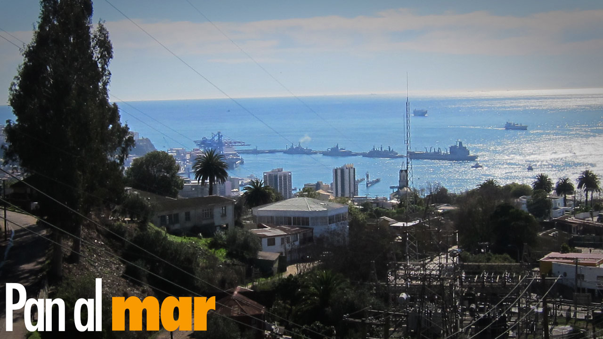
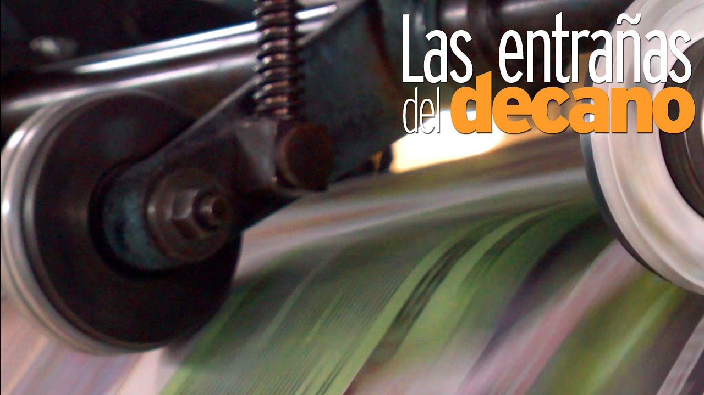

el fin siempre se pospone
Hans Kauffmann nunca eligió ser relojero. Desde hace 50 años está atrapado en su oficio, pero sabe que las manecillas han educado a sus hijos y construido todos sus logros. Como en una adicción, el fin siempre se pospone.
su vida y su emprendimiento
Keitty Álvarez decidió en 2008 formar su propia empresa. En Humita Diseño ella toma las decisiones. Como en todo negocio siempre surgen dificultades. Ahora suma un nuevo proyecto, esta vez personal: su hija Emita. Mientras la marca se consolida paso a paso como referente en Valparaíso, Keitty ve cómo su vida y su emprendimiento se entrelazan.
romper para crear
El recolector de rostros
Jorge Tobar rompe para crear. Con las teselas retrata a quienes
han influido en su vida y le han inspirado. Sabe que su trabajo
no se valora lo suficiente, aún así, imagina la vida como un
mosaico que se construye pieza a pieza.
Electricista de profesión, Jorge Tobar siempre quiso convertirse
en artista. Comenzó de pequeño, cuando pintaba las murallas de
su pieza, disciplina que abandonó por exigencia de su padre.
Hoy reconoce que no se arrepiente. Sus estudios en electricidad
en la Universidad Federico Santa María –en Valparaíso- le han
permitido manejar herramientas que lo ayudaron a perfeccionar la
técnica del mosaico, disciplina a la que hoy dedica su vida.
Un viaje a Marruecos por trabajo lo contactó por primera vez con
el mosaico. Le cautivó. Sólo años más tarde, cuando estaba de
vuelta en Valparaíso, su ciudad natal, se enteró de que en
Nicaragua impartían clases sobre el arte de construir con
teselas. Sus ganas por aprender le empujaron a dejarlo todo.
Su especialidad son los retratos. Víctor Jara, el Padre Hurtado
y Albert Einstein son algunos de los rostros que Tobar ha
capturado.
Muchas de sus piezas se conservan en su taller del Cerro Barón.
Allí se esconden historias de ventas fallidas. A sus 56 años,
Jorge ansía completar una gran colección. Su sueño es que algún
día sus mosaicos sean reconocidos. Y si dan dinero, mejor.
apegado a la nostalgia
El Cinzano ostenta el título de restaurante más antiguo de la ciudad: 115 años. Es uno de los templos de Santiago Wanderers y vive apegado a la nostalgia.

donde nunca falta un saludo
Renán Romero trabaja en los ascensores desde noviembre de 1971. Es el más veterano en su rubro y entiende su labor como una entrega a los demás, donde nunca falta un saludo o una sonrisa. Ahora que afronta su jubilación reconoce que quisiera prolongar su estancia en El Peral, desde donde observa su ciudad adoptiva: Valparaíso.
es la rutina
Pan al Mar
Vicente Alti llegó a Viña del Mar en 1941. Partió desde Bilbao (España) para alejarse de las secuelas de la guerra. Después de 70 años en Chile, admite que este país se lo ha dado todo.

Vicente Alti llegará al Anayak al mediodía y pedirá un cortado.
El camarero pondrá edulcorante. Es la rutina. Este bilbaíno de
81 años acude todos los días a esta cafetería del centro de Viña
del Mar. Alto y afable, revive el día que se subió al barco que
le trajo a América y vio una panera:
“No conocíamos el pan”. Y eso, le marcó. Como la imagen
de su madre arrojando aquel pan a los que se quedaban. Lo
repitieron en todos los puertos españoles en los que atracó la
embarcación. Él y su familia eran afortunados, les esperaba un
futuro mejor.
“La posguerra fue tremenda, fue un período muy triste”,
relata Alti. En los puertos la gente rescataba el pan que caía
al mar, lo escurría y se lo comía. Él llegó a Viña del Mar en
1941. Zarpó con su madre y su hermana pequeña escapando de las
secuelas de la guerra civil española. Su padre, Valentín Alti,
había ahorrado el dinero suficiente para enviarles los pasajes
desde Chile.
No era la primera vez que Vicente Alti se embarcaba. El 21 de
mayo de 1937 también estaba en la cubierta de un barco, el La
Habana. Aún no había cumplido siete años ni se había convertido
en don Vicente, un empresario forjado en la premisa de “luchar,
trabajar y trabajar”. Partía hacia Inglaterra desde Bilbao,
acompañado de su otra hermana, Ana María, dos años menor que él.
Los dos se convertían en “niños de la guerra”, como otros miles
de menores españoles exiliados durante el conflicto. Su padre se
despedía de él ataviado con el uniforme del ejército
republicano.
En Inglaterra vivió el racionamiento, pero nunca pasó hambre.
Desde allí mantuvo correspondencia con su padre, que combatió
toda la guerra. Vicente retornó a Bilbao al término de la
contienda, en 1939. Su hermana permaneció en Inglaterra hasta el
fin de la II Guerra Mundial. Volvieron a encontrarse en la
aduana de Los Andes en 1945.
Ese niño, que recordaba las pascuas sin regalos, dejó huella en
Alti. Quiso que a sus hijos nunca les faltase nada, aunque se
reprocha haber olvidado algo: recordarles que “todo eso cuesta
obtenerlo”. Para ellos escribió
‘Me dejaste sola Vicente…’. Esas fueron las primeras
palabras de Ana María en aquella aduana tras tantos años
alejados.
La intención de Vicente Alti era compartir su experiencia en
Inglaterra y el regreso a Bilbao:“Quería que supiesen que la vida es dura, que hay que
prepararse”. Pensó en el libro como un regalo para los más cercanos, pero
alcanzó las dos ediciones. La mayoría de quienes lo han leído
siempre le comenta lo mismo: quieren saber más. Cuarenta y cinco
páginas no son suficientes. Si se le pregunta por una segunda
parte, se ríe.
Esa compilación de recuerdos fue una manera de conversar sobre
esos años bélicos con sus hijos y con sus amigos. Los padres de
Vicente fueron más reservados.
“Fue un tema que nunca tocamos. Todo aquello era una herida
que se cerró con el final feliz del reencuentro”, explica Alti. Ahora se imagina el sufrimiento que entrañó
para sus padres la separación.
Cuando volvió a Bilbao se encontró con su ciudad cambiada. Era
obligatorio cantar el himno fascista en el colegio y después del
cine. “Sentí un poco de rabia”, confiesa. El reencuentro aún era
lejano, en aquellos días la herida estaba abierta. Y escocía.
Su padre, exiliado y recluido en Francia, escapó en el Winnipeg:
el barco que Pablo Neruda fletó desde el puerto de Pauillac el 4
de agosto de 1939 y que atracó un mes más tarde en Valparaíso.
En él, más de 2.000 españoles huían del franquismo y los campos
de concentración franceses.
Valentín Alti combatió en el bando republicano, pero Vicente
bromea con que debió de ser uno de los pocos pasajeros de aquel
barco que no era comunista:“Mi padre me decía que nunca me fiase de un comunista, porque
él había luchado junto a ellos en las trincheras”.
Fútbol y música
Mientras toma un cortado, responde el celular y coordina una
visita. Quiere que todo esté pronto:
“Me gusta trabajar, me entretiene”. No obstante no todo es trabajo. Para despejarse juega al
bridge cuatro días por semana -le agiliza la cabeza- y practica
yoga. También disfruta de sus nietos:
“Mantengo una relación muy bonita con ellos”, y solo les
aconseja una cosa: “Si queréis ser algo, tenéis que
estudiar”.
Él estudió hasta sexto, después empezó a trabajar y jugar al
fútbol. Era arquero y en 1949 firmó por Everton. El año
siguiente, ‘Los ruleteros’ ganaron su primer título nacional.
El balompié le ata a sus orígenes, el Athletic de Bilbao es una
de sus pasiones. Es parte de su amor por el País Vasco, del que
se siente muy orgulloso:“Participo de todas las tradiciones. No sé hablar euskera,
pero las canciones vascas me las sé”. En el coche lleva música tradicional y disfruta escuchando al
Orfeón Donostiarra. Y canta, aunque admite que antes se cantaba
más. Le viene de familia, su padre formó parte del Coro Vasco
que se fundó en el Winnipeg durante el viaje.
También integró un grupo de eusko dantza, los bailes típicos del
País Vasco. No contaban con el txistu ni el tamboril, los
instrumentos tradicionales. Los encargaron. En aquellos años el
transporte era por barco, todo iba más despacio. Cuando
llegaron, el grupo de baile ya se había disuelto.
Tira del cuello de la camisa y saca una cadena. Cuelga un
lauburu, el símbolo de cuatro aspas de la cultura vasca. Lo
muestra satisfecho. A pesar del apego, nunca se ha planteado
regresar a su ciudad natal:
“El paisaje me fascina, me llena el alma, pero sólo quiero
volver de paseo. Me quedo aquí. Chile me lo dio todo”.
Con un leve dejo español que los años en Chile no han podido
borrar, celebra que su padre se estableciese en Viña del Mar. El
plan original era asentarse en Argentina, donde vivía uno de sus
tíos. Al patriarca de los Alti le fascinó aquel lugar de la
costa pacífica y cambió de idea.“Fue una decisión afortunada”, sentencia Vicente.
Entonces, en 1941, no sabía nada de aquel país que ha sido
durante 70 años su hogar. En estas siete décadas, Vicente Alti
ha construido su sitio en Chile y perdido el miedo al miedo.
Ahora sabe cómo le gustaría ser recordado:“Fue un buen hombre, un buen amigo y una buena persona”.
por Luis Melgar
la mutua presencia
Perros de la calle
Valparaíso es probablemente la localidad más turística de Chile.
Ésta realidad choca con la diaria convivencia diaria entre
extranjeros y de lugareños, con los miles de perros vagabundos
que pueblan las calles de la Ciudad Puerto. A pesar de que
muchos de ellos están apadrinados, la violencia y la suciedad en
las vías públicas es cotidiana. Para la persona que visita
Valparaíso, perderse del paisaje por tener que mirar el suelo
para evitar pisar las heces de los perros, es una verdadera
molestia. Sin embargo para el porteño parecería no existir ni
las fecas ni los perros. La costumbre ha convertido a animal y
humano en seres indolentes.
Como la mayoría de las reglas, esta también tiene su excepción.
Carolina Alexandroff, de 29 años, ha dedicado buena parte de su
vida a intentar solucionar el problema de los perros callejeros.
Carolina nunca sintió una afición demasiado grande por los
animales. Cuando se independizó de sus padres, se encontró con
un perro vago con distemper en la plaza por la que pasaba todos
los días en la tarde al volver, en la tarde, a su nuevo hogar, a
la salida del ascensor Victoria. Después de un par de días, el
animal seguía en las mismas condiciones. Carolina se apiadó y
decidió llevarlo a su casa hasta poder sanarlo. Lo que comenzó
solo como un par de días se convirtió en meses. Lo que comenzó
como sólo un perro, se convirtió rápidamente en catorce.
La vida diaria de Carolina se vio afectada en lo práctico y en
lo emocional. Todo giraba en torno a sus perros: se cambió de
casa dos veces para acomodar la necesidad de espacio de sus
nuevos inquilinos; no salía por más de dos horas por temor a
dejarlos solos mucho rato. Su rutina cambió de la noche a la
mañana.
Su nueva, intensa e inesperada relación con los perros
abandonados la hizo formar parte de la Sociedad Protectora de
Animales de Valparaíso, ubicada en Laguna Verde. En este canil,
la capacidad máxima de albergue es de 700 perros. No sólo estaba
sobrepoblada, además a Carolina le parecían poco útiles sus
medios de control y cuidado de los animales.
Ante esto Carolina empezó a presentar sus propios proyectos, que
en su opinión fueron rechazados una y otra vez por un directorio
con ideas poco innovadoras y poco abiertos a cambios radicales.
En ese momento Carolina abandonó la Sociedad e ideó un plan de
acción independiente para detener el alarmante crecimiento de la
población canina callejera. El esfuerzo fue tan desgastador y
recibió tan poca recompensa, que decidió dejar de postergarse y
realizarse como persona. Fue regalando uno a uno sus 14 perros y
lentamente desprendiéndose de la causa pro animal, limitándola
sólo a sus tiempos libres. Actualmente los esfuerzos de Carolina
se concretan en el apadrinamiento de dos perritos vagabundos
apadrinados; la Lobita y Beto.
Más de 180 años de historia
Las entrañas del Decano
El Mercurio de Valparaíso es el más antiguo de los diarios de habla hispana en circulación. Cuando llega la medianoche, su rotativa se pone en marcha.

Las entrañas de un diario rugen. Las rotativas escupen los
ejemplares que estarán por la mañana en los quioscos. Las
planchas de aluminio se curvan en los cilindros y dejan su
impresión tintada en las enormes tiras de papel. Pero no todas
las máquinas suenan igual, algunas vociferan con el peso de la
historia. Las rotativas de El Mercurio de Valparaíso bufan desde
1827.
Que el decano de la prensa en español salga todos los días
depende, en parte, de Miguel Peña. Él es el responsable de la
rotativa del diario. Su función es afinar la eficiencia, que el
proceso de impresión del diario sea más efectivo. Que no queden
inútiles, como se denominan los ejemplares defectuosos.
Cuando llega el cierre del diario, sobre las 0:30, la maquinaria
calienta motores. Primero hay que transcribir, mediante una
máquina láser, la información en las planchas de aluminio,
barnizadas con una emulsión fotosensible. Después las placas
pasan a la rotativa, un modelo de 1973. La primera plancha se
obtiene en un minuto y medio; el resto, en menos tiempo.
Puerto
Peña se apasiona con su trabajo:“Esta pega es muy bonita”. Lo descubrió con 17 años, cuando su padre le llevó a conocer
la rotativa en la que trabajaba. Admite que fue“amor a primera vista”. Ahora tiene 56 años y su vida profesional no se ha alejado de
la tinta y el papel. Los últimos 12 años ha vivido en
Valparaíso. Si de él dependiese, se quedaría para siempre en la
Ciudad
A Miguel Peña le gustaría que de la imprenta saliesen diarios
plagados de noticias positivas:
“Ahí, me muero tranquilo”. Denuncia que las noticias
actuales son el reflejo de un mundo “poco solidario”. 4.980
kilos de papel por día.
El sistema de impresión ha evolucionado mucho en poco tiempo.
Peña recuerda cuando se fotografiaban las páginas. Llegó la
computación y para muchos impresores supuso no poder adaptarse
al cambio.
Ahora, los medios en papel se encuentran ante una nueva
encrucijada técnica: internet y los medios digitales.“La información en papel se irá extinguiendo”, vaticina Miguel Peña. Uno de los motivos: los jóvenes cada
vez leen menos diarios.
La visión del responsable de las rotativas de El Mercurio tiene,
además, un poso ecológico. Peña asume que el gasto de papel, la
tala, es enorme. En la rotativa intentan reciclar, pero eso no
evita que se gasten 12 bobinas diarias. Cada una lleva 415 o 420
kilos de papel, lo que equivale a un consumo de entre 4.980 y
5.040 kilos diarios. Cada kilo cuesta 327 pesos.
La rotativa, en la que se imprimen otras cabeceras como La
Estrella y El Líder, siempre cuenta con tres toneladas de papel
en stock. Se acumula en un almacén en el que los cilindros lo
convierten en una especie de patio de columnas.
Miguel Peña explica que su trabajo se sustenta en la
planificación, el control y la entrega. En ocasiones, la
planificación se dinamita con alguna noticia inesperada. Que
paren las rotativas. Para esas “eventualidades” siempre están
preparados. Recuerda el 11-S, cuando el diario ya había salido.
Publicaron una edición especial. En cualquier caso, estar
preparado no quita emoción a esos momentos que, con la rotativa
rugiendo,“se viven con adrenalina”.
retrato de la ciudad natal
Mario Celedón retrata su ciudad natal. Los muros de Valparaíso son sus lienzos. Su obra no sólo es su modo de vida, sino también un legado para los porteños.

un partido de alto riesgo
Estrella Roja y Cerro Monjas viven un partido de alto riesgo. El equipo del Cerro Lomas ocupa la segunda posicion y aspira al primer puesto, en manos de Cerro Monjas. El año pasado los dos equipos se encontraron en la misma situación. Aquel partido lo ganó Estrella Roja, y eso le convirtió en campeón de la fase regular.
la pesca de bajura
Pesca Chica
A las nueve de la mañana vuelve a El Membrillo la primera
embarcación. Es “El Jefe”, uno de los 40 botes de esta
caleta. Retorna con su pesca del día: merluzas. Pocas.
El veterano don Luis Bustamante es el encargado del salón
social, propiedad del Sindicato de Pescadores de la Caleta
El Membrillo, la más antigua de las tres de Valparaíso.“Antes, entre todos, los botes podían llegar a traer 10
mil kilos de pescado en un día. Ahora traen 500, con
suerte”, dice. Sesea entre los vacíos visibles de su dentadura.
Este rasgo es común entre la gente de la caleta. Así como
las arrugas y la piel curtida por el sol y el aire salado.
El trabajo en el muelle empieza horas antes de que llegue el
primer bote de la mañana. Un par de ayudantes cortan jibias
pescadas durante la noche. Hunden los dedos en los ojos y
tentáculos de los moluscos para que no patinen. No hay asco.
Arrojan los restos al agua, para las aves que flotan y
esperan picotearlos antes de que se hundan. Otros dos,
vestidos con impermeables amarillos, cargan jibias a un
camión. Las sacan de un recipiente blanco, salpicándose de
la tinta negra del animal, y las arrojan en un barril de
plástico negro. Arrastran el barril hasta una balanza, lo
pesan y, con la ayuda de una grúa, lo suben al vehículo.
Quien anota el peso es el comprador: tiene apalabrada a una
cantidad de botes que le venden la pesca y él la vuelve a
vender a exportadores y restoranes. Ese es su negocio. Así,
los pescadores se aseguran la venta total de su mercancía.
“El jefe” sube al muelle con la ayuda de la misma grúa.
Pescadores y ayudantes colocan el bote de nueve metros de
eslora sobre un armazón rodado. Entre todos lo empujan hasta
la plaza de entrada a la caleta. Allí, dos pescadores
desenmallan. Sus manos gruesas parecen toscas pero trabajan
de manera violenta, mecánica y práctica: arrancan y
desenganchan las merluzas de la red. Ojos y escamas y aletas
saltan a cada rato y son pisoteados por los primeros
clientes que se asoman sin miedo al olor intenso que se
adhiere al pelo y a la ropa. Algunos pescados aún respiran o
mantienen algún reflejo activo.
Mientras otro pescador se encarga de separar la pesca según
el porte (merluzas chicas y medianas, tres o cuatro
grandes), un cuarto recoge los tachos y las cajas de
plástico, se aleja unos metros y vende a unos clientes que
se agrupan en torno a él con bolsas de nailon para llevarse
una comida sabatina.
El ritual se repite a medida que atracan los demás botes que
salieron al mar a eso de las cinco de la mañana, como “El
Jefe”. Algunos también traen reinetas. Otros llegan de
mariscar, con la red repleta de bultos pequeños y rosados:
langostinos que los pescadores rematan a porrazos contra la
regala de la embarcación, aún enredados. Patas y caparazones
saltan a un par de metros alrededor cada vez que sacuden la
malla. El marisquero más joven, cada tanto, se come alguno
crudo.
El movimiento, los gritos de los trabajadores, el graznido
de las gaviotas, los pelícanos y las golondrinas de mar, y
el ruido de las olas al deshacerse contra el rompiente,
disimulan el descontento que causa el estado de la pesca de
bajura.
“Los industriales son nuestro enemigo”, dice el
pescador Jorge Rivera, con una sonrisa irónica. La pesca de
arrastre perjudica al trabajo de los pescadores artesanales
de El Membrillo. A diferencia de lo que ocurre con algunos
mariscos, no existe una veda de merluza: no se da tiempo a
que se reproduzcan los peces y crezcan. Los barcos
industriales, que llegan a más de 150 millas mar adentro, no
permiten que los peces lleguen a donde pescan los botes de
El Membrillo: unas diez millas desde la costa. Don Luis
extiende sus dedos índices paralelamente a unos quince
centímetros uno del otro:“Las merluzas que se sacan ahora… les sacás la cabeza y
quedan así. ¡Parecen sardinas!”.
Además de los barcos industriales, los pescadores se
enfrentan a otros problemas.
“Las jibias y los lobos se comen la pesca. Para que se
dispersen tienen que salir todos los barcos juntos. Las
jibias aparecieron hace doce años y no se fueron más”, cuenta Bustamante. Merluza, reineta, congrio, corvina,
salmón, jibia y langostinos. Esa es la pesca habitual en El
Membrillo. También pueden conseguir loco, un marisco caro.
“Pero no es negocio”, explica Cecilia, una de las
fileteadoras que limpian el pescado para los clientes de los
botes.
“Pueden llegar a vender una docena en quince luquitas,
pero si no hay plata la tienen que vender en dos. Y la
merluza sale más rápido”, dice mientras deja a un lado las entrañas de los pescados
para las golondrinas de mar que se acercan, revolotean,
picotean la mesada y se las llevan.
“Está de moda la jibia parece”, le comenta un
cliente a Cecilia al pasar.
“Y, ahí es donde está la plata”, le responde sin
dejar de raspar escamas con su cuchillo chico y muy afilado.
La jibia pasó de ser una amenaza a ser una presa valiosa.
Aunque no una presa inocente:
“Tiran hacia abajo, y pueden pesar como 60 kilos. Por eso
muchos pescadores tienen problemas en los riñones”, explica don Luis, frotándose el bajo de la espalda. Hace
cuatro años un bote volcó en el mar. El dueño braceó y
braceó hasta conseguir ayuda. Atrás dejó a dos compañeros
que no sabían nadar y que quedaron flotando, sostenidos por
unos barriles de plástico. Cuando volvió a socorrerlos
habían desaparecido. “Se los comieron las jibias”,
explica Bustamante, serio, con los ojos muy abiertos.
La vida de los pescadores es desde siempre convivir con la
posibilidad de una tragedia. Las historias de ahogados y de
salvados a último momento abundan entre ellos. A los pies de
la estatua de San Pedro, ubicada sobre la rambla, con la
mirada dirigida al mar, pueden leerse 27 nombres bajo la
leyenda:
“En memoria de los caídos en faena de pesca”. La
cuenta empezó en enero de 2004. La caleta y el sindicato
cuentan con alrededor de 140 pescadores registrados.
El trabajo en El Membrillo dura toda la noche, la mañana y,
a veces, hasta entrada la tarde. La fiesta de San Pedro,
patrono de los pescadores, está muy próxima. Es una
tradicional celebración popular de Valparaíso. La estatua se
paseará atada a un bote frente a la costa y las
embarcaciones marcharán detrás, en procesión. Los pescadores
le pedirán al santo buena pesca y seguridad.
Antes de que la ubicaran en la rambla, la imagen del San
Pedro estaba sobre la playa. Fue trasladada para construir
el estacionamiento de la caleta. Cecilia recuerda:
“El año que la movieron fue complicado. Hubo temporales y
se inundó todo acá”. Otro pescador, apoyado en el marco de una puerta, de cara
al sol, advierte:
“Siempre que pase algo malo va a ser porque no se le rezó.
Si pasa algo bueno, va a ser solo porque pasó”. En la plaza de la caleta hay una gran imagen de la
Inmaculada Concepción. A sus pies, varias velas. En este
lugar los jóvenes se ganan el respeto gracias a la bravura
que demuestran al meterse con sus botes al mar desde una
edad temprana, asumiendo los riesgos y muchas veces la
ingratitud del oficio. “El Pájaro” es uno de ellos. Este
carismático personaje prepara su embarcación con entusiasmo,
antes de que llegue “El jefe” al muelle, para adentrarse a
bucear y arponear. Tiene 38 años, bucea desde los 15.
“El pescador, por lo general, no quiere que su hijo le
siga los pasos. Se disfruta, pero también se conocen los
peligros”, reconoce don Luis. Él dejó la pesca de bajura hace casi
15 años. Le diagnosticaron artrosis en la rodilla, le
pusieron una prótesis y ahora, además, tiene un tobillo
inmovilizado. Su hijo no pesca.
“Se extraña… Sobre todo las monedas que hacía cuando
pescaba en el norte. La verdad es que mandaba un cuarto
para la casa y el resto me lo gasté en copetes y yendo al
vacilón”, sesea, entre risas un poco culpables.
Él sabe que el panorama de la pesca ha cambiado.
En el salón social que custodia hay una heladera vieja,
vasos polvorientos, un pool tapado y ventanas que no cierran
por el óxido acumulado en los marcos. Cuelga una cartelera
con fotos. Una de ellas muestra a un pescador desganado que
sostiene dos merluzas por las agallas, una en cada mano. Una
cabría al menos cuatro veces dentro de la otra. Al pie de la
foto puede leerse:
“Merluza chica, que es la que va quedando, comparada con
merluza grande”.
por Juan Manuel Gari
el aire salado
Las señoras del pescado
Susana sabe lo que tiene que hacer. No pierde un segundo en
sacar la primera merluza del cajón. Desde las nueve y media
de la mañana, cuatro mujeres remueven escamas, cortan
cabezas y quitan esquelones. Se ganan la vida, de lunes a
sábado, limpiando los pescados que llegan a la caleta El
Membrillo.
Tienen los anillos ensangrentados. Trabajan en silencio, muy
concentradas, casi sin detenerse. Y cuando llega un cliente:
-¿Pa’ qué es lo que es? -Pa’ frito. -Ya…
La venta ya comenzó en el puerto artesanal más antiguo de
Valparaíso. Unas sesenta personas forman rondas alrededor de
los cajones y esperan que les llegue su turno para llevarse
algo de la escasa pesca del día. No ha sido un buen sábado.
A un costado, en la galería del edificio principal, se
ubican las mesas de metal de las señoras del pescado.
Trabajan allí desde hace mucho tiempo. Cecilia, de 44 años,
es la más nueva; llegó al puerto hace dos años. Es la que
más conversa, la que más ríe, la que más tararea la cumbia
de un CD que escuchan sin freno. Cecilia es la más veloz del
grupo en la limpieza. También es la única que agarra el
cuchillo con la mano izquierda. Si fueran un equipo de
fútbol, Cecilia tendría el número 10 en la espalda. Domina
la hoja de metal como ninguna de sus tres compañeras y no
vacila en reconocerlo. Hace unos días tuvo que comprarse un
cuchillo nuevo porque había dejado la hoja anterior “finita,
finita”. Todas concuerdan. Incluso Susana, la “abuela” del
grupo, una anciana de 74 años que dice haber nacido entre
los botes. Las arrugas de esta mujer parecen los surcos que
el viento porteño ha dejado en su rostro. Pese a la edad,
trabaja a la par de sus compañeras, que vienen a ser
discípulas suyas.
Los cuchillos son una herramienta importante para limpiar
pescado, pero los dedos lo son aun más. Hay que agarrar el
animal, girarlo, sacarle las tripas… Eso no se hace con
cuchillo. Cecilia, Susana, Verónica y Rosa tocan en un día
más pescados que la mayoría de los pescadores. El viernes
fue una jornada intensa: limpiaron 80 docenas, 960 pescados.
Un promedio de 240 cada una. En ocho horas de trabajo,
equivale a un pescado cada dos minutos. Pudieron sentarse a
fumar un cigarro media hora antes del atardecer.
El olor se va “con agua y jabón”, dice la sobrina de
Susana, que también conoce la vida de puerto desde pequeña.
Verónica, de 59 años, está más que acostumbrada al hedor.
“Si no, con vinagre; pero con agua y jabón se va”,
reafirma despreocupada luego de meter su pulgar en una
merluza. Minutos después Cecilia relata, entre risas, que en
el bus de vuelta a casa no faltan los que se tapan la nariz.
Verónica no tiene ese problema porque vive con su tía en el
Cerro Playa Ancha, el más grande de la ciudad, ubicado
enfrente al puerto. Su calle se ve desde la mesa donde
trabajan. Es la que está adornada con banderines de colores
por la fiesta que se aproxima: San Pedro. Verónica y Susana
bajan de su casa a pie. Verónica sube caminando, Susana se
toma un bus para evitar el esfuerzo del repecho.
A los cinco años, la señora Verónica -así se llaman entre
ellas- ya pescaba. Según cuenta, de guagua aprendió a
encarnar. Y lo hace hasta el día de hoy, parte de su tarea
es encarnar para los pescadores. Por eso tiene los bolsillos
llenos de anzuelos.
Las mujeres de delantal blanco trabajan sin distraerse. Pero
se divierten. “Tengo varios pololos”, bromea la
abuela y señala al primer pescador que se le cruza. Se ríe
fuerte y una tos repentina le corta la carcajada. Tiene el
pecho cerrado. De cualquier manera, hoy no siente frío.
Viste un gorro de lana lila, un abrigo celeste y un suéter
de colores atado al cuello. Todas están bien abrigadas, con
la cabeza cubierta o con varias prendas. Susana, además,
tiene puesto un elemento que la diferencia: un protector de
nailon amarillo sobre cada manga.
Las señoras del pescado conforman un equipo. Se valoran,
cuidan unas de otras y se respetan. También son muy celosas
de su trabajo. Y aunque no sean funcionarias de la caleta
-no integran el sindicato-, están habilitadas para usar las
instalaciones del puerto. Muchos de sus clientes son
pescadores o comerciantes que trabajan con los pescadores.
El restorán del puerto y otro que está cruzando la calle son
algunos de los negocios que se valen de los servicios de las
limpiadoras.
“También trabajamos para el enemigo”, reflexiona
Cecilia en voz alta, un tanto resignada. Se refiere a que
ofrecen parte de su trabajo a los pesqueros de arrastre. A
esta caleta no sólo llega el pescado a través de su muelle.
Todos los días se acercan camiones con pesca de los barcos
industriales. El conflicto puerto artesanal-industrial está
muy presente en El Membrillo, sobre todo entre los
pescadores. Ellas no lo sufren tanto, porque necesitan que
les llegue trabajo de alguna forma. Por limpiar una docena
de pescados cobran 500 pesos chilenos (poco más de un
dólar). Si limpian 80 docenas por día, cada una se llevará a
casa 22 dólares. Esto sucede en un buen día.
Todas las señoras tienen hijos. Verónica es la única que
está casada, pero las cuatro lo han estado: Susana es viuda
dos veces, Rosa y Cecilia ya no están en pareja. La señora
Rosa tiene 59 años y es la segunda en antigüedad dentro de
la caleta después de “la abuela”. Habla de sus hijos con
gran orgullo y cuenta que su niña de 24 años está terminando
la secundaria para inscribirse en la Universidad. Lo relata
con una mezcla de entusiasmo y emoción. En eso llega un
nuevo cliente.
“Estos van con cabeza”, dice Cecilia, quien tomó el
pedido. Pone un cajón de merluzas encima de la mesa. La
abuela asiente y regala una lección de historia:
“A la antigua”.
por Juan Marra
ir por más
Este es un proyecto realizado íntegramente por alumnos de la Facultad de Comunicación de la Universidad de los Andes y de la Facultad de Comunicación de la Universidad de Montevideo.